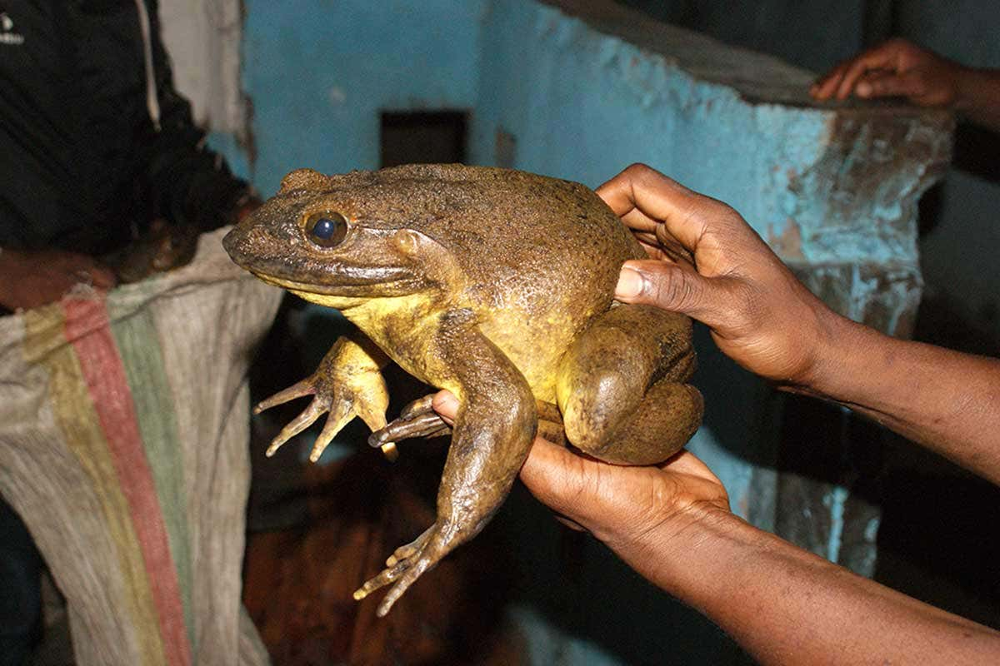

About Frogs
Frogs
A frog is a small, tailless and amphibious animal, that most likely date back from 265 million years ago. They are mainly carnivorous animals. An adult frog has a sticky tongue, protruding eyes and limbs folded underneath. They are known for jumping high, making croaking noises and catching bugs with their long tongues. The majority of frogs like in fresh water and on dry land, but some species are adapted for living underground or in trees. There are around 7,300 recorded species of frogs, but only 3 will be touched on on this website.

Click on the image to learn more about frogs
Poison Dart Frog
Poison dart frogs are a type of frog native to Central and South America. Their size ranges anywhere from 1.5 centimetres in length to 6 centimetres in length. Almost all of them are brightly colored, to warn predators of their toxicity. Adults lay their eggs in any moist place, which icludes leaves and plants. Once they hatch, the adult takes the tadpoles on their back to suitable water (more information on tadpoles later). Some poison dart frogs, such as the golden poison dart frog, have enough toxin on average to kill 10 men. Besides that, many poison dart frogs do not pose very much risk to humans.

Click on the image to learn more about poison dart frogs
Goliath Frog
The goliath frog is the largest living frog. They can grow up to 32 centimetres in length (not including legs), and sometimes weigh 3.25 kilograms. They can normally be found in rivers with sandy bottoms in Middle African countries, such as Cameroon and Equitorial Guinea. They have very acute hearing and fully webbed toes. Despite their large adult size, their eggs and tadpoles are roughly the same size as the ones of other frogs. They can live for up to 15 years in the wild. Sadly, the numbers of goliath frogs in the wild are going down due to habitat destruction and its collection for food and the pet trade.
Click on the image to learn more about goliath frogs
Telmatobius Culeus, or the Scrotum Frog
Telmatobius culues, or the scrotum frog of Lake Titicaca, is a medium to large and endangered species of frog. The only place you'll find it is Lake Titicaca, and it's entirely aquatic. It gained its unfortunate nickname because of its excessive amounts of skin flaps and folds. It's extra skin helps the frog respire in the cold water that it lives in. They are among the largest frogs in the world, with a length of about 20 centimetres (not including legs). Scrotum frogs are officially classified as endangered, due to over-collecting for human consumption, pollution and newly introduced trout to Lake Titicaca.
Click on the image to learn more about scrotum frogs
Tadpoles
A tadpole is the larval stage in the the life cycle of a frog. Unlike the frogs that they metamorphose into, they have gills and tails. Frog tadpoles are solely aquatic. During their metamorphosis, their diet changes and they begin to breathe air. As touched on before, some species of frogs lay their eggs on plants, and piggyback the tadpoles to water when they hatch.
Click on the image to learn more about tadpoles